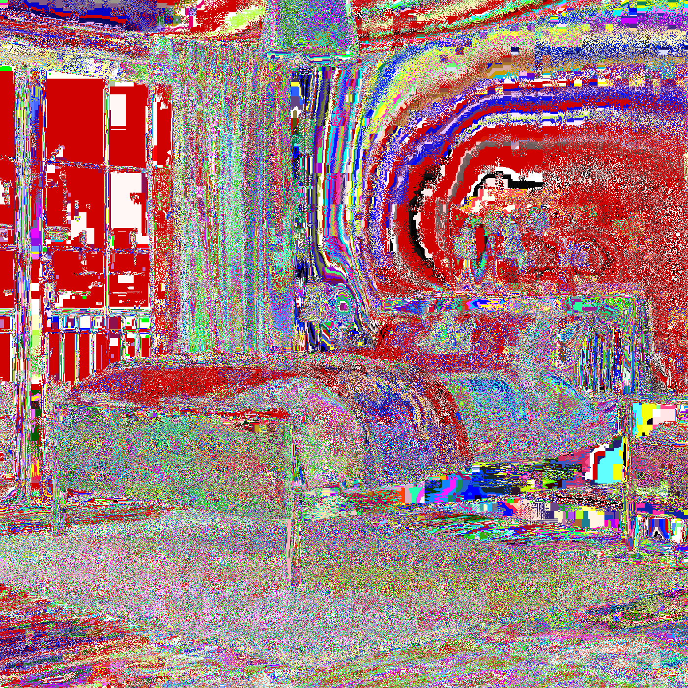
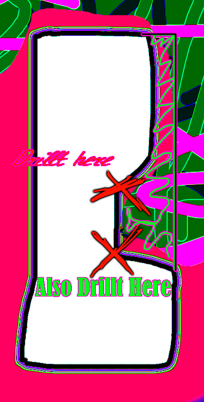
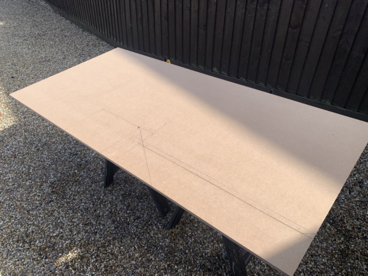
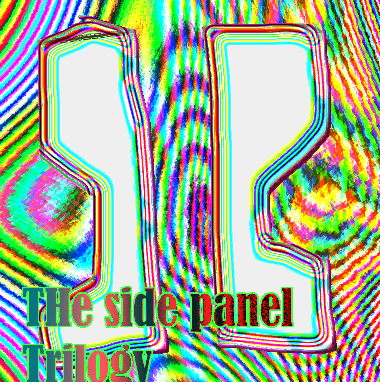
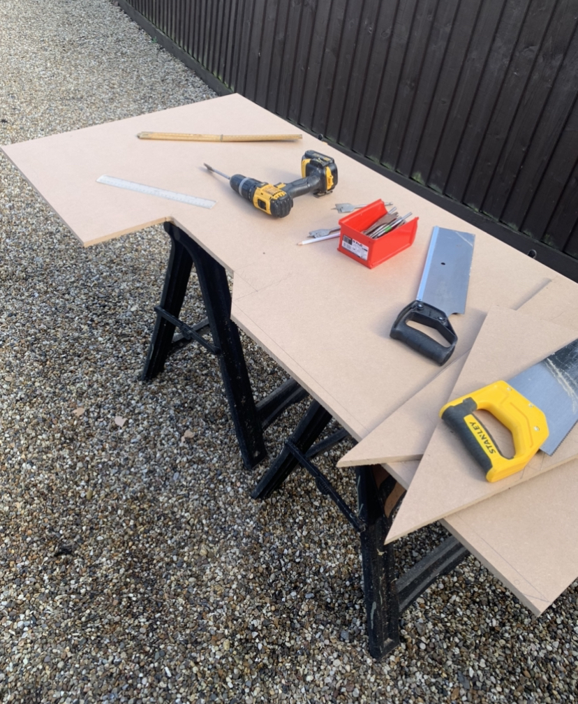

 This is my bed what I woke up forom. That morning.
So then, after waking up, I decided to get to work cutting the side panels of the arcade cabinet. Manly Crent. First, I took the side panels outside in order to get more space from the shed. I also drillt the nook. here! Image!


So then, after that, I cut them out basically. I had to SIT on TOP of the MDF (>!!?!??!) in order to cut it,
and I almost fell. But then I survived. And cut the panels out. Both panesl. (but i had to trace the first one
but like backwards so i wouldn't make the outside of the right panel all messed up.




So basically, that's what I did on that Day. Then I lost the auction on TAIKO 14 FLAGS but It's OK I made someone else pay...
16,500 yen for the item. And also, I am waiting for my System 256 to come (with taiko no Tatsujin 9). It should come sometime...
In the following week... also i bort board
Good by For now. Until next time.
GO BACK TO CABINETGO BCK TO TAIKO
BACK!!!!!!
D
ka
F
don
J
don
K
ka